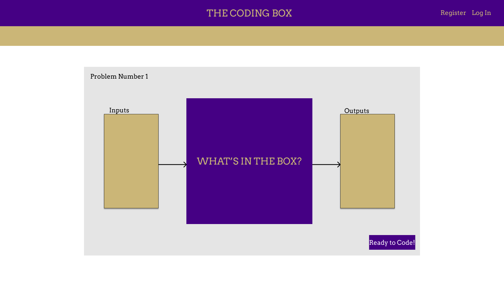
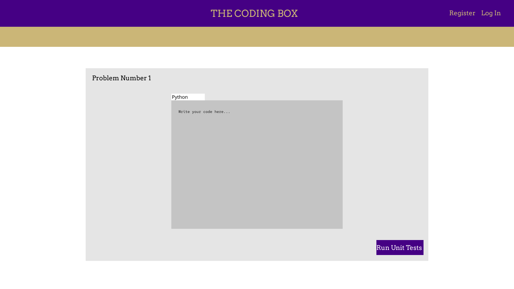
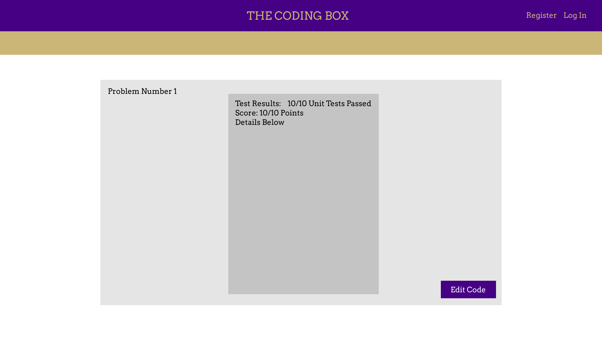

March 9, 2022
This week I worked primarily on sketches of the site, which I made using an online tool called Figma. While not very detailed, the three sketches I made were of an overview of a specific coding problem, the window for writing code, and the unit testing results screen. However, the use of JMU Fonts and colors in these sketches is subject to change.
Problem Overview Screen
Coding Screen
Unit Test Results Screen
For the next entry, I plan to outline a logical JSON payload structure for data, to be used to make the endpoints for the backend API. In addition, I do plan to begin working on the Proposal Paper, and soon after begin actual development.
See you after Spring Break,
Jarod Reichel